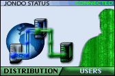
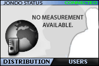
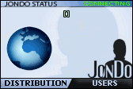

JonDo user interface TOC
JonDo user interface TOC  Usage Mini view
Usage Mini view
JonDo user interface TOC
Usage Mini view
The Anonym-O-Meter displays visual information about the status and the security of the selected service. Detailed information with more concrete data can be reviewed at Details.
From the information the Anonym-O-Meter gives, a partially subjective risk of observation and a maximum level of anonymity can be deducted. The more active users sending and receiving packets there are the higher the level of anonymity for every single packet will be. That is because potentially every user could have been the source of the packet. The number and distribution of mix operators is also crucial: the more mixes there are in a cascade and the further they are spread across the globe, the less likely will it be that a user can be observed by an operator or third parties. Which value you should prefer depends on the potential observer that you want to protect yourself from. This evaluation provides, besides an informational function for the users, also positive incentives for commercial mix operators to preferably form secure cascades.
|  | A picture similar to this shows that you are connected to an anonymization service. The symbols measure the approximate level of anonymity offered by the active service. The left symbols (server icons) measures the number and regional or international distribution of the servers and operators (optimum: at least three operators, operators and mixes in three different countries = one blue and one green connection). The right symbol evaluates the number of active users on the service (optimum: at least 500). In pure number represenation, both values range from 0 to 6, separated by commas (e.g. 5,4 / 6,6 - the two last values describe the theoretic maximum: first distribution, last users). |
| This picture appears if anonymity is switched off. All surfing will be allowed after confirmation only. | |
|  | If this picture is displayed, a connection to the service is active and you can surf anonymously. But no status information could yet be obtained from the InfoService. This could be an error in the Infoservice, a slow internet connection, a blocking (personal) firewall or simply because you have forbidden JonDo automatic InfoService requests. |
|  | This picture is shown while JonDo is trying to connect to an anonymization service. Meanwhile, no connection will be allowed through JonDo. |